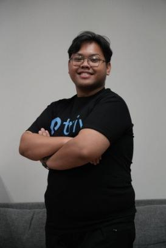

Profesional Business Development di PT. Tiga Inti Utama (TRIV Crypto Exchange). Mengintegrasikan ketajaman logika filsafat, etika relasional teologi, dan ritme komunikasi musikal untuk membangun kemitraan bernilai tinggi.

Bagaimana integrasi teologi, filsafat, dan musik mendukung eksekusi Business Development yang berdampak nyata:
Membangun kemitraan atas dasar empati, transparansi, dan integritas moral. Fokus pada pembentukan kepercayaan dan relasi jangka panjang.
Trust & RelationshipMenganalisis masalah dari prinsip dasar (first principles), menyaring kebisingan pasar, serta merumuskan deal win-win yang rasional.
Critical AnalysisKepekaan membaca situasi (room awareness), penguasaan tempo sebagai MC/Moderator, dan menyelaraskan berbagai pemangku kepentingan.
Stage Presence & TempoFokus pada pertumbuhan kemitraan strategis, komunikasi publik, dan kedisiplinan operasional.
Fondasi pemikiran sistematis, analitis, dan kepemimpinan.
Mendalami etika terapan, hermeneutika, kepemimpinan transformasional, dan dinamika komunitas.
Membangun penalaran kuantitatif, metodologi ilmiah empiris, dan pemecahan masalah logis.
Alat kerja dan keterampilan praktis yang siap diaplikasikan.
Terbuka untuk kolaborasi kemitraan bisnis, undangan sebagai moderator/MC, atau diskusi gagasan strategis.